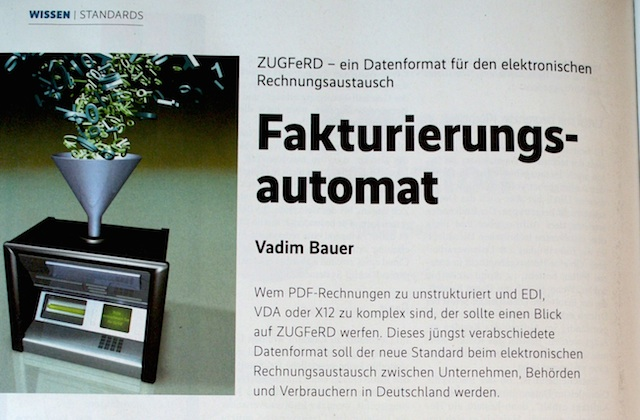
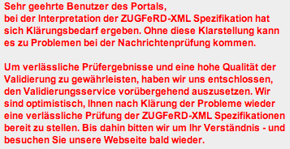
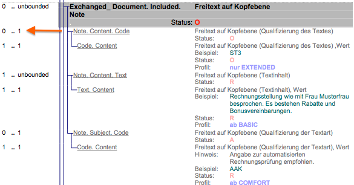
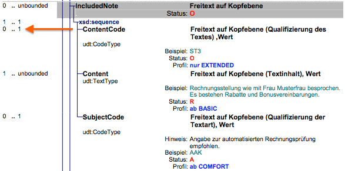

<dependency>
<groupId>io.konik</groupId>
<artifactId>pdfbox-carriage</artifactId>
<version>0.8.3</version>
</dependency>Post Tags
Konik 1.0 Release und Update ZUGFeRD Validatioin Service
Posted on 28 January 2015
Konik 1.0 steht zu Benutzung bereit.
Changelog
Es sind noch weitere Validierungen hinzugekommen. Zusätzlich wurden die Texte für die Fehlermeldungen hinzugefügt sowohl auf Englisch als auch auf Deutsch. Zahlreiche Änderungen wurden vorgenommen, welche die Stabilität der Bibliothek verbessern.
ZUGFeRD Validation Service.
Der ZUGFeRD Validation Service basiert nun auch auf Konik 1.0.
PdfBox-Carriage Release-0.8.3
Posted on 17 October 2014
Es gibt einen bug fix release für Konik PDFBox-carriage.
Bugfix
-
Fix im JSR-330 setup. In einer JSR-330 Umgebung hat das Dependency Injection für PDFBox-Carriage nicht richtig funktioniert.
Konik 1.0 Roadmap
Posted on 14 October 2014
Nachdem nun Konik 0.8.2 veröffentlicht wurde und die Bibliothek schon seit einiger Zeit im Einsatz ist, stellt sich die Frage: was steht noch alles auf der TODO-Liste für den 1.0 Release?
Änderung am Fluent Interface.
So ziemlich mit dem ersten Release wurden Fluent Interfaces eingeführt.
Invoice invoice = new Invoice(BASIC);
invoice.setHeader(new Header()
.setInvoiceNumber("20131122-42")
.setCode(_380)
.setIssued(today)
.setName("Rechnung"));Heute ist das Fluent Interface ein Teil des Datenmodells. Dies ist zwar recht praktisch, bringt aber auch einige Probleme mit sich wie ein komplexeres Datenmodel und Inflexibilität.
Ziel ist es daher, das Fluent Interface vom Datenmodell zu trennen. Zu jeder Klasse wird es einen Builder geben, der dann auch einige weitere Funktionen mitbringen wird.
Invoice invoice = new InvoiceBuilder(BASIC).header(
new HeaderBuilder()
.invoiceNumber("20131122-42")
.code(_380)
.issued(today)
.name("Rechnung")).build();Unterscheidung der Profile
Momentan muss der Benutzer das Profil selber setzen. Vor allem muss er wissen, welches Profil erlaubt ist. Diese Entscheidung sollte dem Benutzer abgenommen werden und das Profil sollte anhand des Inhalts ermittelt werden.
Mehr Validierungen
Ein Großteil der Validierungen existiert bereits schon, es gibt aber noch einige Stellen die ergänzt werden sollten.
Verbesserte Dokumentation
Die Dokumentation und die JavaDoc Kommentare sollten korrigiert und ergänzt werden.
Nachdem diese Punkte abgearbeitet wurden, steht dem Release 1.0 nichts im Weg. Ziel ist, bis Dezember 2014 Konik Release 1.0 zu veröffentlichen.
ZUGFeRD Weekly News #35
Posted on 31 August 2014
Nachrichten und Neuigkeiten und rund um ZUGFeRD und elektronische Rechnungen im Zeitraum vom 20 Juli bis 31 August. Die ZUGFeRD Weekly News haben eine kleine Pause eingelegt wegen der Sommerflaute und Urlaub.
Artikel
-
Walter Steigauf von Unitek beschreibt in Rechnung 2.0 die Grundlagen, den Nutzen und die organisatorische Umsetzung von elektonischen Rechnungen im Hinblick auf ZUGFeRD.
News
-
SEEBURGER präsentiert ZUGFeRD Cloud Services für den elektronischen Rechnungsversand und -empfang von ZUGFeRD. Die Funktionalität umfasst das Einbetten von XML-Rechnungsdateien in PDF/A-3-Dateien und das Extrahieren der XML-Rechnungsdaten aus einer ZUGFeRD-konformen PDF/A-3-Datei.
-
Broadgun zeigt mit pdfMachine ZUGFeRD einen virtuellen Drucker mit Besonderheit. Das ZUGFeRD Model und die visuelle Darstellung werden gemeinsam zum virtuellen Drucker gesendet. Der virtuelle Drucker konvertiert die strukturierten Daten und fügt diese als Anhang zum finalen Dokument hinzu. Hier ein Beispiel mit einem HTML-Eingangsdokument: mit ZUGFeRD Daten und visuellem Inhalt. Das Ergebnis, nachdem es zum virtuellen Drucker gesendet wurde, ist eine ZUGFeRD konforme PDF Datei.
-
Ecosio präsentiert mit ZUGFeRD Smart Client eine webbasierte Lösung für ZUGFeRD, welche wahrscheinlich ähnlich der z-Rechnung ist.
-
Firma d.velop AG, ist aus der ZUGFeRD-Unterstützerliste entfernt worden.
-
Datev e.V integriert sukzessive den ZUGFeRD-Standard in die DATEV Produktpalette.
-
Lobster GmbH kündigt an das Lobster_data ab September ZUGFeRD unterstützen wird.
-
Gnuaccounting 0.8.6 erschienen mit überarbeiteter Unterstützung für ZUGFeRD 1.0
-
Die Webseite ZUGFeRD-Kostenlos bietet eine Webapplikation an, welche ähnlich wie z-Rechnung ist. Der Dienst steht aber derzeit noch nicht zur Verfügung.
Veranstaltungen
-
Am 10 und 11 September findet in Berlin die erste FeRD-Konferenz statt und Konik wird dabei sein.
ZUGFeRD oder Zugpferd, der Unterschied ist leicht zu erkennen.
Release Konik 0.7.1 und Validation Service 0.4.1
Posted on 26 August 2014
Es gibt einen weiteren Release der Konik Bibliothek: Mit der jetzt veröffentlichten Version 0.7.1 hat Konik einen Stand erreicht, der sich vollständig produktiv nutzen lässt.
Mit der Veröffentlichung von Konik 0.7.1 wurde auch der ZUGFeRD Validierungs-Service auf die neueste Version gebracht und steht ebenfalls zu Verfügung.
<dependency>
<groupId>io.konik</groupId>
<artifactId>konik</artifactId>
<version>0.7.1</version>
</dependency><dependency>
<groupId>io.konik</groupId>
<artifactId>itext-carriage</artifactId>
<version>0.7.1</version>
</dependency>Neuerungen
Es sind weitere Validierungen dazugekommen, so dass man die in der Vergangenheit erstellten Rechnungen noch einmal überprüfen sollte. - Zahlen werden nun korrekt gerundet auf zwei bzw. vier Nachkommastellen. - Profile werden bei der Validierung des Datenmodells mit einbezogen. - Alle ZUGFeRD Felder sind vorhanden. - Nicht gültige Felder wurden so weit es geht entfernt.
Offene Punke
-
Es gibt zwar schon viele Validierungen, aber es könnte noch die eine oder andere Lücke geben.
-
JavaDoc ist zwar schon vollständig, aber es fehlt oft die fachliche Beschreibung, so dass man noch oft in der Dokumentation nachschlagen muss.
Ausblick
-
Im nächsten Schritt werden die Interfaces zu den PDF Carriages überarbeitet und ausgelagert, so dass neben iText noch weitere Anbieter an Konik andocken können.
-
Das Konik Model soll weiter verbessert werden.
Neuer Release vom ZUGFeRD Validation Service
Posted on 01 August 2014
Nach längerer Zeit gibt es wieder ein Update für den ZUGFeRD Validation Service: Nachdem es keinen ZUGFeRD Validation Service mit Konik 0.5.0 gab, soll Konik 0.6.0 der erste Release sein, welcher ZUGFeRD 1.0 unterstützt.
Die aktuelle Konik Version ist zwar noch nicht ganz reif, gibt aber bereits einen Vorgeschmack auf das zu erwartende Ergebnis.
Neuerungen
Wie ich schon in Errata 1 und 2 geschrieben habe, ist die Validierung der Rechnung gegen das XSD ziemlich sinnlos und kann auch teilweise falsch sein. Deshalb wurden zwei weitere Arten von Validierungen hinzugefügt: Roundtrip Vergleich und Bean Validation.
- Roundtrip Vergleich
-
Hierbei wird das XML in das Konik Model und dann wieder zurück ins XML transformiert. Danach werden die beiden XML Dateien miteinander verglichen und der Vergleich wird dargestellt.
Mit diesem Verfahren lässt sich erkennen, ob:-
beim Einlesen Elemente weggelassen wurden, weil diese nicht spezifiziert oder im Model nicht vorgesehen sind,
-
Werte korrekt vorliegen und formatiert sind,
-
die Reihenfolge der Elemente korrekt ist.
-
- Bean Validation
-
Konik verwendet nun Bean Validation, auch bekannt als JSR-303 bzw. JSR-349. Damit lässt sich schon beim Erzeugen der Rechnung einfach feststellen, ob diese konform mit der Spezifikation ist.
Fazit
Der akuelle Snapshot gibt einen guten Vorgeschmack auf die finale Version 0.6.0.
Es wird daher empfohlen, Rechnungen noch einmal zu validieren.
Noch hat die aktuelle Version einige offene Punkte:
So ist die Entwicklung der Bean Validierung noch nicht ganz abgeschlossen. Ausserdem
gibt es noch einige wenige Elemente, die im Rechnungsmodel noch nicht existieren.
Artikel über ZUGFeRD und Konik im iX Magazin 8/2014
Posted on 30 July 2014
Es gibt einen guten Grund für einen Gang zum Kiosk: für die gerade erschienene Ausgabe des iX Magazin 8/2014 habe ich einen Artikel über ZUGFeRD und die Konik Bibliothek geschrieben. Es geht um das ZUGFeRD-Konzept und die Implementierung mit der Konik Bibliothek. Ich hoffe, dadurch das Thema ZUGFeRD Entwicklern und IT-Profis näherzubringen.

Figure 1. ZUGFeRD Artikel auf Seite 98.
Errors in the ZUGFeRD Specification Part 2
Posted on 24 July 2014
Last week I posted about Errors in the ZUGFeRD Specification. A reply to my questions came very quickly from FeRD(Forum elektronische Rechnung Deutschland) stating that the documentation and the resulting XSD Schema are correct.
The explanation for the differences is based on the fact the ZUGFeRD XSD schema is designed following the Venetian blind XML Schema design pattern.
Die CCL ist nach dem Desingprinzip Venetian Blind aufgebaut (Kapitel 6.1, sowie technische Dokumentation Kapitel 4.3), wodurch sich XSD und Spezifikation formal unterscheiden. Die Lösung dafür bietet die ebenfalls veröffentlichte Schematron-Datei (Kapitel 10.6), die genau diese Designlücke schließt. Eine Validierung erfolgt bei ZUGFeRD also immer in der Kombination aus XSD-Validierung und Schematron-Validierung. Die in der gedruckten Spezifikation enthaltenen Informationen haben somit also volle Richtigkeit.
After reading about the XML Schema design and the ZUGFeRD specification and the XSD file I came to the conclusion that:
-
There is no explanation why the resulting cardinalities need to be 1..N instead of 1..1 in the XSD Schema file.
-
Designing forward and backward compatible XML Schemas is very difficult.
-
The XSD Schema alone is pretty useless for ZUGFeRD invoice validation.
Finally we have to take into account the four different documents provided.
-
ZUGFeRD Model (Chapter "3 Das semantische ZUGFeRD-Datenmodell" in "Das ZUGFeRD-Format_1p0_technische_Dokumentation.pdf")
-
ZUGFeRD Schema (Chapter "4 Das ZUGFeRD-Schema" in "Das ZUGFeRD-Format_1p0_technische_Dokumentation.pdf")
-
ZUGFeRD XSD File (ZUGFeRD_1p0.xsd)
-
ZUGFeRD Schematron (ZUGFeRD_1p0.scmt)
Only all four together provide us with a valid ZUGFeRD compliant invoice. Validating your XML Invoice file against only the XSD Schema does not guarantee a ZUGFeRD compliant Invoice. Also a successful validation of an XML file against Schematron is not a guarantee.
CEFEG shutdown their validation service, because it is based on XSD Schema validation and Schematron which cannot guarantee a correct invoice at the current state of development at least.

Figure 1. Error Message on the eInvoice Validation Portal din-zugferd-validation.org.
Incorrect XML Examples
This week I am going to publish corrected XML Invoice Example File. While working on the next release of the Konik library and adding validation features to the library, it was noticed that some of the existent ZUGFeRD examples were marked as incorrect.
Let’s take a look at file Beispielrechnung_1p0_COMFORT.xml which is part of the ZUGFeRD specification package as an example to explain what is incorrect regarding the ZUGFeRD model.
<ram:SpecifiedTradeAllowanceCharge>
<ram:ChargeIndicator>
<udt:Indicator>false</udt:Indicator>
</ram:ChargeIndicator>
<ram:BasisAmount currencyID="EUR">10.00</ram:BasisAmount>
<ram:ActualAmount>1.00</ram:ActualAmount> (1)
<!-- ... -->
</ram:SpecifiedTradeAllowanceCharge>
<!-- ... -->
<ram:SpecifiedLogisticsServiceCharge>
<ram:Description>Versandkosten</ram:Description>
<ram:AppliedAmount>5.80</ram:AppliedAmount> (2)
<!-- ... -->
</ram:SpecifiedLogisticsServiceCharge>| 1 | The ActualAmount contains only the value and no attribute with the currency like in BasisAmount one line above. |
| 2 | AppliedAmount is also defined as udt:AmountType and hence should also contain a currency attribute. |
The ZUGFeRD model stated that all udt:AmountType require an Currency Code. .udt:AmountType requiring a currency code in ApplicableTradeTax image::img/blog/july/AmountType_Example.png["udt:AmountType requiring a currency code"]
The Model and the Schema declare udt:AmountType as required but not the XSD File.
Solution
The first and probably best solution is to use a library such as Konik which will assist you in creating a valid and ZUGFeRD compliant invoice. Konik will also make the XSD Schema Validation and Schematron optional. The second solution would be to modify the XSD Schema file according to the model and ZUGFeRD schema definition to get at least an error when validating the xml against the XSD Schema.
<xs:schema xmlns:udt="urn:un:unece:uncefact:data:standard:UnqualifiedDataType:15" xmlns:xs="http://www.w3.org/2001/XMLSchema" targetNamespace="urn:un:unece:uncefact:data:standard:UnqualifiedDataType:15" elementFormDefault="qualified" version="15.0">
<xs:complexType name="AmountType">
<xs:simpleContent>
<xs:extension base="xs:decimal">
<xs:attribute name="currencyID" type="udt:AmountTypeCurrencyIDContentType" use="required"/> (1)
</xs:extension>
</xs:simpleContent>
</xs:complexType>| 1 | Add use="required" to mark the attribute as required so the validation of the XML Files against the XSD Schema will fail. |
Maybe because of the Venetian blind schema design requirements or the automatic generation of the XSD Schema File from the ZUGFeRD Schema definition, this was not done.
ZUGFeRD Weekly News #29
Posted on 20 July 2014
ZUGFeRD related news and articles from 13th July until 20th July.
Article
-
DsiN published a blog post with tips and background information for invoice sender and receiver regarding ZUGFeRD and electronic invoicing.
Errors in the ZUGFeRD Specification Part 1
Posted on 17 July 2014
This is a summary of my finding regarding the ZUGFeRD specification while working on Konik 1.0.
Incoherent date formats
Lets take a look at chapter 6.5.3 of the ZUGFeRD format specification. The chapter defines the two date formats in ZUGFeRD. One where the date string is accompanied by a format code and another one described only as a string. The last one did not exist in the RC Specification.
- Following questions arise
-
-
UN/EDIFACT 2379 - Date or time or period format code specifies around 80 different date formats. Should all formats be allowed in ZUGFeRD or only the named 102, 610 and 616? Furthermore UN/EDIFACT 2379 also defines periods.
-
IssueDateTime is defined in the specification as yyyy-MM-ddTHH:mm:ss (Example: 2013-08-05T00:00:00). The XSD on the other hand is a union of dateTime or date.
<xs:simpleType name="DateMandatoryDateTimeType"> <xs:union memberTypes="xs:dateTime xs:date"/> (1) </xs:simpleType>1 This means that yyyy-MM-ddTHH:mm:ss and yyyy-MM-dd are both valid types which is not clear from the specification.
-
Incorrect XSD
DefinedTradeContact
The DefinedTradeContact within a TradePartyType is defined with an unbound occurrence. According to the specification it should occur maximum one time.
<xs:complexType name="TradePartyType">
<xs:sequence>
<xs:element name="ID" type="udt:IDType" minOccurs="0" maxOccurs="unbounded"/>
<xs:element name="GlobalID" type="udt:IDType" minOccurs="0" maxOccurs="unbounded"/>
<xs:element name="Name" type="udt:TextType" minOccurs="0"/>
<xs:element name="DefinedTradeContact" type="ram:TradeContactType" minOccurs="0" maxOccurs="unbounded"/> (1)
<xs:element name="PostalTradeAddress" type="ram:TradeAddressType" minOccurs="0"/>
<xs:element name="SpecifiedTaxRegistration" type="ram:TaxRegistrationType" minOccurs="0" maxOccurs="unbounded"/>
</xs:sequence>
</xs:complexType>| 1 | Correct should be maxOccurs="1" |
NoteType
Model and Schema definition declare ContentCode as optional and with a max occurrence of one.

Figure 1. Model definition page 7.

Figure 2. Schema description page 50.
<xs:complexType name="NoteType">
<xs:sequence>
<xs:element name="ContentCode" type="udt:CodeType" minOccurs="0" maxOccurs="unbounded"/> (1)
<xs:element name="Content" type="udt:TextType" minOccurs="0" maxOccurs="unbounded"/>
<xs:element name="SubjectCode" type="udt:CodeType" minOccurs="0"/>
</xs:sequence>
</xs:complexType>| 1 | Within the XSD ContentCode is defined as 0..N |
ZUGFeRD Weekly News #28
Posted on 13 July 2014
ZUGFeRD related news and articles from 6th July until 13th July.
News
-
An updated version of the ZUGFeRD 1.0 package is available for download. The version of 11th July contains corrected sample files.
-
Jochen released Version 1.1 of Mustang project adding support for ZUGFeRD 1.0.
-
TASK eDoc Services have a ZUGFeRD Printer Driver which is able to create automatically a ZUGFeRD compliant invoice.
-
Rechnungsaustausch.org published a list of ZUGFeRD SDK providers and Konik is part of it.
Article
-
E-docs published a case study based on the electronic invoice project for the Federal Agency for Technical Relief (THW). Page 133 is showing a figure of a PDF to ZUGFeRD converter from TASK eDoc Services.
-
Federal Ministry of the Interior (BMI) published the Guidelines for Electronic invoicing in public administration.
-
Here is a critical comment regarding the Guidelines for Electronic invoicing in public administration.
Events
-
The Forum electronic invoice Germany (FeRD) organizes a free Conference on the 10 th any 11th of September.
ZUGFeRD Weekly News #27
Posted on 06 July 2014
ZUGFeRD related news and articles from 29th June until 6th July.
News
-
ZUGFeRD wins the 3rd place in the eGovernment competition that was mentioned in weekly #24.
-
T-Systems Multimedia Solutions offers a ZUGFeRD Validator which according to the announcement should be able to validate PDF content against the structured XML data.
Article
-
The Data Processing Organization for Tax Agents and Related Tax Services Providers Germany (DATEV) made a positive statement about the feature of ZUGFeRD
ZUGFeRD Weekly News #26
Posted on 29 June 2014
ZUGFeRD related news and articles from 22nd June until 29th June.
This week was dominated by the official ZUGFeRD 1.0 announcement. Hundreds of news sources picked up this recentness.
News
-
An excerpt of ZUGFeRD 1.0 news from various sources. Ferd, Handelsblatt, Golem, TechChannel, CIO, Focus, Heise and DIN.
-
German Institute for Standardization (DIN) officially launched a ZUGFeRD validation service which now supports ZUGFeRD 1.0
-
ZUGFeRD Info package is available for download.
Konik library 0.5.0 release
Posted on 25 June 2014
The Konik library 1.0 is being scheduled to be released in big steps. Just in time with the official ZUGFeRD announcement we completed our 0.5.0 release. This is the "in-between" release and it does not support all of the features of ZUGFeRD 1.0.
Release Notes
The Konik domain model can now be considered stable. For the final 1.0 release, we are planning to extend the model without breaking the existing API.
A zip distribution package is also available for users without a Build System.
Artifacts are available on the Central Repository by the io.konik Group ID.
ZUGFeRD Weekly News #25
Posted on 22 June 2014
ZUGFeRD related news and articles from 14th June until 22nd June.
There was quite some buzz around ZUGFeRD this week, as next Wednesday ZUGFeRD 1.0 will be officially released. On the other hand I can’t report any interesting announcements or articles around ZUGFeRD. I expect more news for the next week.
Join Konik Discussion Forum
Posted on 21 June 2014
A new Discussion Forum is now availibe for the Konik Community. It is going to be a new place for discussions that don’t fit into GitHub or on Stack Overflow.
Looking back on the GS1 electronic invoice practice day
Posted on 14 June 2014
This week I participated in the GS1 electronic invoice practice day with Konik. Looking back on the event, it was full of talks related to electronic invoicing, many of which placed an emphasis on ZUGFeRD. The only two presented business cases did not include ZUGFeRD. During the break I did not have time to ask the two speakers if they had any plans to integrate ZUGFeRD into their electronic invoice process. I plan to catch up with them via E-mail and post results of the conversation.
What pleasantly surprised me was the large number of visitors. Going through the list of around 90 participants, I recognized more than half of the participants were end users mainly interested in ZUGFeRD. From the IT side, some companies were already working with or investigating ZUGFeRD for their projects.
The atmosphere was mainly dominated by people waiting for the first release with the hope of a general ZUGFeRD success before ramping up their projects. Also interesting was the fact that I did not see many ERP companies, but mostly backup and CMS vendors. Participants sometimes criticized the lack of PR for ZUGFeRD, especially among tax consultants.
Conclusion
Everyone is waiting for a ZUGFeRD success to minimize risk, while at the same time hoping for success because the demand is high. I personally think that with the Konik library the investment costs can be kept at a low level, which also means that it is a low risk and minimal effort to implement ZUGFeRD-compliant invoicing for vendors and end users.
ZUGFeRD Weekly News #24
Posted on 14 June 2014
ZUGFeRD related news and articles from 9th June until 14th June.
News
-
iText published the Konik ZUGFeRD case for the next weeks PDF days. iText is giving away some tickets.
-
Based on the Konik Library, z-rechnung.de is going to be released as a open ZUGFeRD Online Invoice Service, where everyone can create ZUGFeRD compliant invoices and send the resulting PDF directly to their clients.
-
ZUGFeRD is nominated as a successful cooperation project in eGoverment. You are welcome to vote for the audience Award until the 20th of June.
-
Bonpago comments on their view on the GS1 electronic invoicing best practice day last week.
ZUGFeRD Weekly News #23
Posted on 08 June 2014
ZUGFeRD related news and articles from 2nd June until 8th June.
News
-
Konik is now listed as a ZUGfeRD Software vendor on Forum electronic invoice Germany.
-
Bonpago is hosting a workshop in various locations across Germany on electronic invoicing done right.
-
Mustang project is hosting a [online developer conference] next Tuesday and Konik will be a part of it. Interested developers are welcome to sign up
-
Konik is also participating in GS1 electronic invoicing best practice workshop, that will take place next Thursday in Cologne.
Articles
-
Luratech made their last Webinar ZUGFeRD for SAP available online.
-
Ecosio published an eBook about EDI-Outsourcing.
New Version ZUGFeRD Validation Service
Posted on 02 June 2014
A new Version of the ZUGFeRD Validation Service is now available.
Changelog
The Validation Service now accepts more PDF Mime types. Especially GNUAccounting invoices will work now.
Konik Blog as RSS Feed
Posted on 02 June 2014
The Konik Blog is now also available as a RSS feed. Subscribe to the RSS feed by clicking on the RSS Feed icon .
ZUGFeRD Weekly News #22
Posted on 01 June 2014
ZUGFeRD related news and articles from 26th May until 1st June.
News
-
BITKOM (German ICT industry association) recommends that companies adopt the new ZUGFeRD standard for their accounting.
-
Austrian Federal Ministry of Finance takes positive stock regarding the transition to e-invoice.
-
Austrian Economic Chambers published videos on Electronic invoice to the federal government.
-
GNU Accounting Version 0.8.5 is currently the only Open Source Accounting software that can write ZUGFeRD compliant invoices.
Articles
-
This Presentation from CeBIT 2014 is now online available Electronic invoice with ZUGFeRD made easy - thousand easy ways
-
German craftsman newspaper informs their readers that electronic invoices will soon be mandatory in public procurement.
-
BITKOM published booklet ZUGFeRD - Standard for electronic invoices Saves money for everyone
-
DIRECTIVE 2014/55/EU on electronic invoicing in public procurement is now mandatory. I mentioned this directive a few times before in ZUGFeRD weekly but never had a link at hand.
ZUGFeRD Weekly News #21
Posted on 25 May 2014
ZUGFeRD related news and articles from 19th May until 25th May.
News
-
Mustang project comes into being. Mustang is a ZUGFeRD open source project similar to Konik. Current focus is on attaching and reading XML content to PDFs with the help of PDFBox.
-
ferd management & consulting GmbH led by Stefan Engel-Flechsig who is also head of FeRD is lunching a new invoice portal.
Articles
-
The German Electronic Invoicing Association is elaborating on a new regulation draft of Principles to ensure the proper maintenance and preservation of books, records and documents in electronic form, as well as for data access.
Konik upcoming release preview
Posted on 23 May 2014
Next Konik release 0.3.0
I am currently working on the next Konik release, which will have many changes regarding the Konik model.
One big change is going to be the switch from the free text UNECE codes to Enumerations. This shift has its pros and cons.
- Pros
-
-
A document generated by Konik is semantically correct.
You have a higher chance that another party can process your document not only read it. -
The user can choose form code values instead of looking them up in the UNECE Database.
-
- Cons
-
-
You need to update to the newest Konik library every time new codes are added be UNECE.
-
If another party provides a semantically incorrect document Konik will no be able to read it.
-
The Konik user need to map internal system codes to Konik/UNECE Codes.
-
Another change will be a much simpler data model. The hierarchy of the model will become lower and thus easier to understand and work with.
ZUGFeRD Weekly News #20
Posted on 18 May 2014
ZUGFeRD related news and articles from 12th May until 18th May.
News
-
The PDF library iText 5.5.1 now supports ZUGFeRD.
-
Combit’s List and Label now supports ZUGFeRD.
Events
-
The German Engineering Federation VDMA is hosting an Process improvement in payments event with ZUGFeRD content on 30th June in Frankfurt.
-
The e-Business navigator Chemnitz is hosting an e-Invoice and e-Archiving event on the 5th June.
Articles
-
Stefan Engel-Flechsig the head of Forum Electronic Invoicing is talking about the advantages of e-invoicing with ZUGFeRD.
ZUGFeRD Weekly News #19
Posted on 12 May 2014
ZUGFeRD related news and articles from 5th May until 11th May.
News
-
Bonpago will present a free ZUGFeRD tool for electronic invoice exchange on the M-days in Frankfurt.
-
iText is currently implementing ZUGFeRD XML invoice attachment and detachment functionality for the next iText release.
ZUGFeRD Weekly News #18
Posted on 04 May 2014
ZUGFeRD related news and articles from 28th April until 5th May.
News
-
Last week was dominated by news about the ZUGFeRD Release Candidate like on Heise and Project Consult.
-
PDF Tools announced support for attaching and extracting ZUGFeRD XML content for their PDF library products.
-
GISA published product details about ZUGFeRD complete package.
-
DocuWare announced the availability of their DocuWare ZUGFeRD service.
-
FibuNet announced support ZUGFeRD for incoming invoice processing of their ERP software FibuNet webIC.
ZUGFeRD Weekly News #17
Posted on 27 April 2014
ZUGFeRD related news and articles from 21st April until 27th April.
News
-
Yet another ZUGFeRD Release Candidate is available for review. The final 1.0 release will be published on 25thth of June.
-
Electronic Business Extensible Markup Language (ebXML) is becoming an official ISO standard. The data model defined in ISO 15000-5:2014 is also part of ZUGFeRD. This ISO announcement is one of the reasons for a new ZUGFeRD release candidate.
-
Konik will have a new ZUGFeRD compliant release in the next weeks.
Konik performance measurements
Posted on 23 April 2014
Starting with the latest release we are going to publish benchmark results of the Konik library. Our objective is to create and maintain a library that is scalable enough to process many hundreds of PDFs per second. Initially we start small by benchmarking ITextPdfInvoiceAppender.
For an brief overview the ITextAppenderBenchmark is performing the following steps.
-
Reading a sample PDF from disk
-
Marshalling the invoice model to XML
-
Appending the generated XML to PDF
-
Reading existing XMP content from the PDF
-
Changing the XMP content to add ZUGFeRD information
-
Overwriting the XMP content of the PDF with the modified XMP version
-
Writing the final PDF to output stream or byte array
- Benchmark interpretation
-
The benchmarks mode is set to measure operation throughput per second (ops/s)
- Benchmark setup
-
20 samples were taken after a JVM warm up phase of 20 iterations.
- Hardware information
-
The benchmarks were performed on a MacBookAir4,2 having a 1.8 GHz Intel Core i7 CPU.
Benchmark Mode Threads Samples Mean Units
i.k.b.ITextPdfInvoiceAppenderBenchmark.append_witStreams thrpt 1 20 27,16 ops/s
i.k.b.ITextPdfInvoiceAppenderBenchmark.append_witStreamsAndThreads thrpt 4 20 38,25 ops/s
i.k.b.ITextPdfInvoiceAppenderBenchmark.append_withByteArray thrpt 1 20 26,88 ops/sThe following benchmark is equal to the one above, except that the code under test does not read, modify or appends XMP content to the PDF. Results of this benchmark represent the state of the iText-Carriage prior version 0.2.0.
Benchmark Mode Threads Samples Mean Units
i.k.b.ITextPdfInvoiceAppenderBenchmark.append_witStreams thrpt 1 20 27,97 ops/s
i.k.b.ITextPdfInvoiceAppenderBenchmark.append_witStreamsAndThreads thrpt 4 20 39,32 ops/s
i.k.b.ITextPdfInvoiceAppenderBenchmark.append_withByteArray thrpt 1 20 29,30 ops/sFinally we also benchmarked, the throughput of the XMP Appender which parses, modifies builds XMP content.
Benchmark Mode Threads Samples Mean Units
i.k.b.XmpAppenderBenchmark.append_reuseAppender thrpt 1 20 656,90 ops/s
i.k.b.XmpAppenderBenchmark.append_reuseAppenderWithThreads thrpt 4 20 1203,26 ops/s
i.k.b.XmpAppenderBenchmark.append_withNewAppender thrpt 1 20 439,76 ops/sConclusion
Good news is that there was no performance drop when going from release 0.1.0 to 0.2.0. On the other hand Konik and iText are able to process almost 40 PDFs per second on a 2011 MacBook Air. This is not a bad number but it now needs attention to not become slower when more features are added. Possible performance improvements can be achieved by parallelizing the invoice marshalling and XMP creation. This improvements should hopefully get us close to the 50 PDFs per second.
More benchmark results can be obtained from the {http://ci.konik.io/view/All/job/benchmarks/}[Konik CI Server] performing nightly benchmark tests of the library.
Konik library and iText-Carriage version 0.2.0 released
Posted on 22 April 2014
A new version of the Konik library and the Konik iText Carriage.
Release Notes
Two new features were added.
Also some minor changes made it into the release.
A zip distribution package is also available for users without a Build System.
Artifacts are available on the Central Repository by the io.konik Group ID.
ZUGFeRD Weekly News #16
Posted on 21 April 2014
ZUGFeRD related news and articles from 13th April until 20th April. The last ZUGFeRD week was really quiet, mostly because of the Easter holidays in Germany. Nevertheless a few announcements and articles made it into ZUGFeRD weekly news.
News
-
Luratech released a ZUGFeRD invoice extraction SDK for .NET and native C.
-
The company D.velop announced ZUGFeRD support for their ECM product.
Articles
-
Ecosio published an interesting article elaborating the European Parliament directive in respect to the different invoicing standards across Europe.
ZUGFeRD Weekly News #15
Posted on 13 April 2014
ZUGFeRD related news and articles from 7th April until 13th April.
News
-
AustriaPro the e-Invoice standardization organization responsible for the ebInterface specification, published the English version of the ebInterface documentation.
-
AustriaPro announced to create a free ZUGFeRD to ebInterface converter and vice versa by the end of this year.
Articles
-
ecosio elaborates on the benefits of the e-invoice in comparison to the paper invoice.
ZUGFeRD Weekly News #14
Posted on 06 April 2014
ZUGFeRD related news and articles from 31st March until 6th April.
News
-
The German Insurance Association is hosting a Payment transaction symposium on the 21^st and 22nd of May.
-
At the iText Summit 2014 in Köln, the archiving and accessibility talk will contain a ZUGFeRD use case.
-
The Congress Neue Verwaltung will have an expert forum that deals with ZUGFeRD in terms of public administration.
-
The Tanges Academy is hosting a seminar Die elektronische Rechnung 2014 on the 4^th of June in Nürenberg. The focus of the seminar will be legal and fiscal aspects of ZUGFeRD and electronic invoices.
-
The Bundesverwaltungsamt presents his experiences with eBilling in public administration.
-
Gisa announced a new ZUGFeRD converter.
Articles
-
Neopost is discussing the consequences of the EU Directive regarding electronic invoices.
-
PDF Association published three talks on YouTube from seminars hosted in 2013.
Der neue deutsche Rechnungsdatenstandard ZUGFeRD presented by Bernd Wild.
PDF/A-3 als Trägerformat für ZUGFeRD-E-Rechnungen by Thomas Zellmann.
PDF/A-3 - Das ZUGFeRD Datenmodell by Andreas Pelekies
-
Stefan Willuda asks whether ZUGFeRD has the potential to make a breakthrough in e-billing?
-
The Ecmguide elaborates on the findings of an AIIM study about electronic invoice ROI.
ZUGFeRD Weekly News #13
Posted on 30 March 2014
This is a new format for the Konik Blog to summarize this week’s happenings in the ZUGFeRD universe.
News
-
The European Parliament adopted a new directive on electronic invoicing. This is one of this week’s news highlights.
-
Webinar Announcement ZUGFeRD für SAP on May 9, 11:00 by LuraTech and LS GmbH. Both companies will present their SAP ZUGFeRD Module to create and process invoices.
-
Crossinx announced a software module Invoice1 Inbound for processing inbound invoices. This software is also capable of processing ZUGFeRD invoices.
-
GS1 Germany is hosting an all-day electronic invoicing workshop on the 12^th of July. The main focus of the event will be ZUGFeRD.
Articles
-
ZUGFeRD für die E-Rechnung. An article explaining ZUGFeRD to managers and people not familiar with ZUGFeRD. Within the article, there is also an announcement that the final release of ZUGFeRD is expected this summer.
Dependency Injection with the Konik library
Posted on 20 March 2014
Starting with version 0.2.0, the Konik library and iText-Carriage are supporting JSR 330 dependency injection.
Injectable Konik Classes
The Singleton classes InvoiceTransformer in the Konik library ITextPdfInvoiceExtractor and ITextPdfInvoiceAppender in the iText-Carriage module can now be injected into your application. The only requirement is that your Dependency Injection Framework supports JSR-330. Even though DI frameworks are widely used, the Konik library and its modules do not force you to use a DI framework at all. You can still instantiate the above classes with the new Operator.
Which Dependency Injection Frameworks are supported?
All common Dependency Injection Frameworks and JEE6 compatible Application Servers support JSR-330 Dependency Injection. This means that if your application is based on Spring, Guice, JEE6, Apache OpenWebBeans, or JBoss Weld, then you are able to inject the Konik classes mentioned above into your application. The only requirement is that the JSR-330 API javax.inject.* is on your classpath, which is not always true, as the following examples explain.
Spring and Konik example
Make sure that you use Spring above Version 3, which supports JSR-330. The dependency on the JSR-330 API are declared as optional in Spring, which means that you need to add the JSR-330 library to your application. In your project pom.xml file, add the following dependency.
<dependency>
<groupId>javax.inject</groupId>
<artifactId>javax.inject</artifactId>
<version>1</version>
</dependency>The next step is to configure Spring to search additional dependencies. This step is only necessary if you restricted Spring component scanning to certain packages beforehand. Otherwise, you are ready to go.
For Spring with an XML configuration, append the Konik library package name io.konik to the existing component scanning directive.
<context:component-scan base-package="com.myCompany, io.konik" />@Configuration
@ComponentScan("com.myCompany, io.konik")(1)
@EnableAutoConfiguration
class Application {
// ...| 1 | For Java-based Spring configuration, append the io.konik package in the @ComponentScan annotation. |
Other Dependency Injection Frameworks
OpenWebBeans also has JSR-330 API as an optional dependency, similar to Spring. The only minor difference is that OpenWebBeans recommends the use of a different JSR-330 dependency Jar package.
<dependency>
<groupId>org.apache.geronimo.specs</groupId>
<artifactId>geronimo-atinject_1.0_spec</artifactId>
<version>1.0</version>
</dependency>Using the Konik library with Google Guice does not need any special setup, as Google Guice is already bundled with JSR-330. This is also true for JEE6 Applications Servers. If in doubt, you should look up the reference manual of your Dependency Injection Framework, which normally goes into greater detail about this topic.
Konik library and iText-Carriage version 0.1.0 released
Posted on 02 March 2014
Today, the Konik library and the Konik iText Carriage were released to the Maven Central Repository. Both libraries carry the version 0.1.0.
Release Notes
Since this is the first release, everything has changed in comparison to the previous version. These Release Notes are intended to highlight what already works, what does not work, and what you can expect for the next release.
The ZUGFeRD model is completely supported by Konik. Reading and writing XML content according to the ZUGFeRD specification is working.
On the Konik to-do list, there are various model validations that have still not been implemented.
iText-Carriage allows users to attach and extract ZUGFeRD Model Data from a PDF. The functionality is still limited because currently, iText-Carriage strictly expects the incoming PDFs to be PDF/3-B compliant. However, this will change with a feature release. The second issue is that in the current state, no XMP Metadata is written to the PDF when the XML content is attached.
A zip distribution package in the Maven Central Repository is intended for users who are not using a Build System. The package contains the Konik libraries and all dependent libraries.
All artifacts can be found on Maven Central by the Group ID: io.konik.
Konik project Start
Posted on 01 December 2013
The beginning of the Konik library project.
The goal of the library is to provide an easy way to create, read, and validate ZUGFeRD invoices. Our vision is to provide the #1 library resource for every application that deals with reading and writing ZUGFeRD invoices.
Moreover, I hope that with the Konik library, the ZUGFeRD standard will continue to gain momentum, especially in small and medium-sized enterprises. Further development of this highly useful library will be influenced by increased adoption of the ZUGFeRD standard, as well as user input.
Uma (Horse). Ink drawing on paper by unnamed artist. Year ca. 1890.